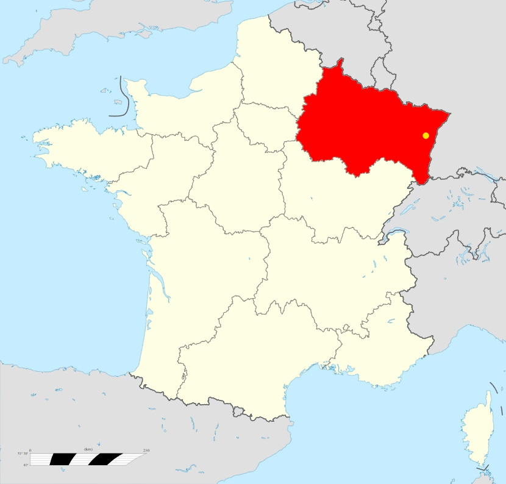

Accueil
PRESENTATION

Informations générales :
Bonjour, je me nomme Alexis , je suis agé de 18 ans, j'ai 2 frêre un petit et un grand.Je suis née le 07/07/2003 à Selestat dans le Grand-Est.
Dans cette région j'ai étudié de l'école primaire jusqu'a aujourd'hui.
Mon parcours scolaire est le suivant :
8 ans à l'école primaire de Rossfeld. (2006-2014)
4 ans au collège Robert Schuman à benfeld (2014-2018)
3 ans au lycée Jean-Baptiste Schwilgué à Sélesat(2018-2021)
Actuellement je suis à UHA de Colmar en BUT réseau et télécomunications. (2021-xxxx)
Le choix de ce parcour :
J'ai descidé de réaliser des études dans le domaine de l'informatique étant donner que depuis mon enfance je suis en contacte avec des technologies plus ou moins connecté et j'ai toujours était fasciné par les possibilités que ces dernières peuvent crée, l'esprit créatif de l'être humain est la seule limites étant donnée que l'Homme est en constante évolution l'on peu même pencer que la technologie n'as pas de limité et permetera de tout réaliser et d'améliorer la vie au quotidien en apportant des solutions techinique pour les entreprises mais également en apportant du divertissement.
Malgré tous ces points positifs, ses solutions techniques se doivent d'être en constante évolution que ce soit pour la sécurisation des information ou pour pouvoir rester crédible sur le marcher fasse au concurrent qui cherche a toujours innover pour gagner en clients.
C'est pour ces différentes raisons que je souhaiterais participer à une petite échelle au maintien de cet univers et pourquoi pas apporter ma pierre à l'édifice si la situation le permet.